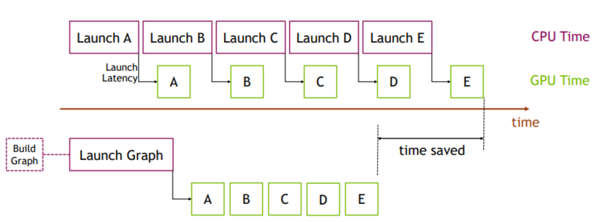

Modern scientific computing typically leverages GPU-powered parallel processing cores to speed up large-scale applications. This chapter discusses how to implement CPU-GPU heterogeneous tasking algorithms with Nvidia CUDA Graph.
You need to include the header file, taskflow/cuda/cudaflow.hpp, for creating a GPU task graph using tf::cudaGraph.
CUDA Graph is a new execution model that enables a series of CUDA kernels to be defined and encapsulated as a single unit, i.e., a task graph of operations, rather than a sequence of individually-launched operations. This organization allows launching multiple GPU operations through a single CPU operation and hence reduces the launching overheads, especially for kernels of short running time. The benefit of CUDA Graph can be demonstrated in the figure below:

In this example, a sequence of short kernels is launched one-by-one by the CPU. The CPU launching overhead creates a significant gap in between the kernels. If we replace this sequence of kernels with a CUDA graph, initially we will need to spend a little extra time on building the graph and launching the whole graph in one go on the first occasion, but subsequent executions will be very fast, as there will be very little gap between the kernels. The difference is more pronounced when the same sequence of operations is repeated many times, for example, many training epochs in machine learning workloads. In that case, the initial costs of building and launching the graph will be amortized over the entire training iterations.
Taskflow leverages CUDA Graph to enable concurrent CPU-GPU tasking using a task graph model called tf::cudaGraph. A tf::cudaGraph is essentially a C++ wrapper over a native CUDA graph, designed to simplify GPU task graph programming by eliminating much of the boilerplate code required in raw CUDA Graph programming. The following example creates a CUDA graph to perform the saxpy (A·X Plus Y) workload:
The graph consists of two CPU-to-GPU data copies (h2d_x and h2d_y), one kernel (saxpy), and two GPU-to-CPU data copies (d2h_x and d2h_y), in this order of their task dependencies.
We do not expend yet another effort on simplifying kernel programming but focus on tasking CUDA operations and their dependencies. That is, tf::cudaGraph is simply a lightweight C++ wrapper over the native CUDA Graph. This organization lets users fully take advantage of CUDA features that are commensurate with their domain knowledge, while leaving difficult task parallelism details to Taskflow.
Use nvcc to compile a CUDA Graph program:
Please visit the page Compile Taskflow with CUDA for more details.
By default, a tf::cudaGraph runs on the current GPU context associated with the caller, which is typically GPU 0. Each CUDA GPU has an integer identifier in the range of [0, N) to represent the context of that GPU, where N is the number of GPUs in the system. You can run a CUDA graph on a specific GPU by switching the context to a different GPU using tf::cudaScopedDevice. The code below creates a CUDA graph and runs it on GPU 2.
tf::cudaScopedDevice is an RAII-styled wrapper to perform scoped switch to the given GPU context. When the scope is destroyed, it switches back to the original context.
2 while accessing it from a kernel on GPU 0. An easy practice for multi-GPU programming is to allocate unified shared memory using cudaMallocManaged and let the CUDA runtime perform automatic memory migration between GPUs.tf::cudaGraph provides a set of methods for users to manipulate device memory. There are two categories, raw data and typed data. Raw data operations are methods with prefix mem, such as memcpy and memset, that operate in bytes. Typed data operations such as copy, fill, and zero, take logical count of elements. For instance, the following three methods have the same result of zeroing sizeof(int)*count bytes of the device memory area pointed to by target.
The method tf::cudaGraph::fill is a more powerful variant of tf::cudaGraph::memset. It can fill a memory area with any value of type T, given that sizeof(T) is 1, 2, or 4 bytes. The following example creates a GPU task to fill count elements in the array target with value 1234.
Similar concept applies to tf::cudaGraph::memcpy and tf::cudaGraph::copy as well. The following two methods are equivalent to each other.
To offload a CUDA graph to a GPU, you need to instantiate an executable CUDA graph of tf::cudaGraphExec and create a tf::cudaStream to run the executable graph. The run method is asynchronous and can be explicitly synchronized on the given stream.
There is always an one-to-one mapping between an tf::cudaGraphExec and its parent CUDA graph in terms of its graph structure. However, the executable graph is an independent entity and has no lifetime dependency on its parent CUDA graph. You can instantiate multiple executable graphs from the same CUDA graph.
Many GPU applications require launching a CUDA graph multiple times and updating node parameters (e.g., kernel arguments or memory addresses) between iterations. tf::cudaGraphExec allows you to update the parameters of tasks created from its parent CUDA graph. Every task creation method in tf::cudaGraph has a corresponding method in tf::cudaGraphExec for updating the parameters of that task.
Between successive offloads (i.e., iterative executions of a CUDA graph), you can ONLY update task parameters, such as changing the kernel execution parameters and memory operation parameters. However, you must NOT change the topology of the CUDA graph, such as adding a new task or adding a new dependency. This is the limitation of Nvidia CUDA Graph.
As tf::cudaGraph is a standalone wrapper over Nvidia CUDA Graph, you can simply run it as a task. The following example runs a CUDA graph from a static task: